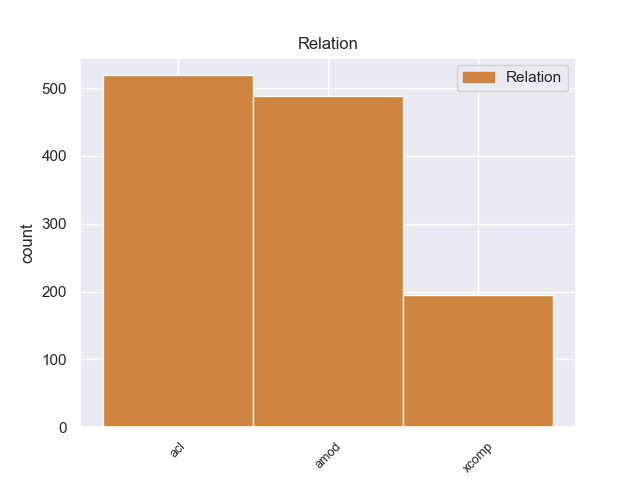
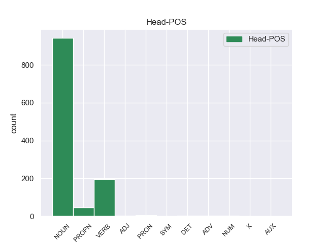
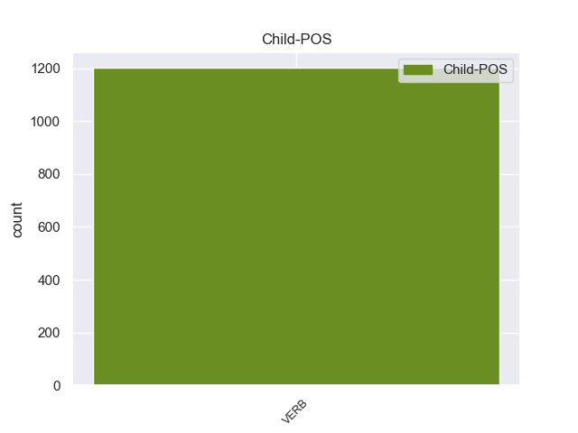

Distribution of features within this leaf



non-conforming Examples:
1 Although _ _ _ _ 0 _ _ _
2 the _ _ _ _ 0 _ _ _
3 announcement _ _ _ _ 0 _ _ _
4 was _ _ _ _ 0 _ _ _
5 probably _ _ _ _ 0 _ _ _
6 made _ _ _ _ 0 _ _ _
7 to _ _ _ _ 0 _ _ _
8 show _ _ _ _ 0 _ _ _
9 progress _ _ _ _ 0 _ _ _
10 in _ _ _ _ 0 _ _ _
11 identifying _ _ _ _ 0 _ _ _
12 and _ _ _ _ 0 _ _ _
13 breaking _ _ _ _ 0 _ _ _
14 up _ _ _ _ 0 _ _ _
15 terror _ _ _ _ 0 _ _ _
16 cells _ _ _ _ 0 _ _ _
17 , _ _ _ _ 0 _ _ _
18 I _ _ _ _ 0 _ _ _
19 do _ _ _ _ 0 _ _ _
20 n't _ _ _ _ 0 _ _ _
21 find _ _ _ _ 0 _ _ _
22 the _ _ _ _ 0 _ _ _
23 news news NOUN NN Number=Sing 0 _ _ _
24 that _ _ _ _ 0 _ _ _
25 the _ _ _ _ 0 _ _ _
26 Baathists _ _ _ _ 0 _ _ _
27 continue continue VERB VBP Mood=Ind|Tense=Pres|VerbForm=Fin 23 acl 23:acl:that _
28 to _ _ _ _ 0 _ _ _
29 penetrate _ _ _ _ 0 _ _ _
30 the _ _ _ _ 0 _ _ _
31 Iraqi _ _ _ _ 0 _ _ _
32 government _ _ _ _ 0 _ _ _
33 very _ _ _ _ 0 _ _ _
34 hopeful _ _ _ _ 0 _ _ _
35 . _ _ _ _ 0 _ _ _
1 There _ _ _ _ 0 _ _ _
2 has _ _ _ _ 0 _ _ _
3 been _ _ _ _ 0 _ _ _
4 talk talk NOUN NN Number=Sing 0 _ _ _
5 that _ _ _ _ 0 _ _ _
6 the _ _ _ _ 0 _ _ _
7 night _ _ _ _ 0 _ _ _
8 curfew _ _ _ _ 0 _ _ _
9 might _ _ _ _ 0 _ _ _
10 be _ _ _ _ 0 _ _ _
11 implemented implement VERB VBN Tense=Past|VerbForm=Part 4 acl 4:acl:that _
12 again _ _ _ _ 0 _ _ _
13 . _ _ _ _ 0 _ _ _
1 Everyone _ _ _ _ 0 _ _ _
2 is _ _ _ _ 0 _ _ _
3 apprehensive _ _ _ _ 0 _ _ _
4 , _ _ _ _ 0 _ _ _
5 there _ _ _ _ 0 _ _ _
6 is _ _ _ _ 0 _ _ _
7 some _ _ _ _ 0 _ _ _
8 talk talk NOUN NN Number=Sing 0 _ _ _
9 that _ _ _ _ 0 _ _ _
10 April _ _ _ _ 0 _ _ _
11 9th _ _ _ _ 0 _ _ _
12 and _ _ _ _ 0 _ _ _
13 10th _ _ _ _ 0 _ _ _
14 are _ _ _ _ 0 _ _ _
15 going go VERB VBG Tense=Pres|VerbForm=Part 8 acl 8:acl:that _
16 to _ _ _ _ 0 _ _ _
17 be _ _ _ _ 0 _ _ _
18 bloody _ _ _ _ 0 _ _ _
19 days _ _ _ _ 0 _ _ _
20 . _ _ _ _ 0 _ _ _
1 Azzaman _ _ _ _ 0 _ _ _
2 newspaper _ _ _ _ 0 _ _ _
3 mentioned _ _ _ _ 0 _ _ _
4 an _ _ _ _ 0 _ _ _
5 announcement announcement NOUN NN Number=Sing 0 _ _ _
6 signed sign VERB VBN Tense=Past|VerbForm=Part 5 acl 5:acl _
7 by _ _ _ _ 0 _ _ _
8 Abdul _ _ _ _ 0 _ _ _
9 Aziz _ _ _ _ 0 _ _ _
10 bin _ _ _ _ 0 _ _ _
11 Muqrin _ _ _ _ 0 _ _ _
12 , _ _ _ _ 0 _ _ _
13 an _ _ _ _ 0 _ _ _
14 Al _ _ _ _ 0 _ _ _
15 - _ _ _ _ 0 _ _ _
16 Qaeda _ _ _ _ 0 _ _ _
17 operative _ _ _ _ 0 _ _ _
18 in _ _ _ _ 0 _ _ _
19 Saudi _ _ _ _ 0 _ _ _
20 Arabia _ _ _ _ 0 _ _ _
21 on _ _ _ _ 0 _ _ _
22 an _ _ _ _ 0 _ _ _
23 Islamic _ _ _ _ 0 _ _ _
24 website _ _ _ _ 0 _ _ _
25 ' _ _ _ _ 0 _ _ _
26 the _ _ _ _ 0 _ _ _
27 voice _ _ _ _ 0 _ _ _
28 of _ _ _ _ 0 _ _ _
29 Jihad _ _ _ _ 0 _ _ _
30 ' _ _ _ _ 0 _ _ _
31 , _ _ _ _ 0 _ _ _
32 in _ _ _ _ 0 _ _ _
33 which _ _ _ _ 0 _ _ _
34 he _ _ _ _ 0 _ _ _
35 stated _ _ _ _ 0 _ _ _
36 that _ _ _ _ 0 _ _ _
37 " _ _ _ _ 0 _ _ _
38 although _ _ _ _ 0 _ _ _
39 mutilating _ _ _ _ 0 _ _ _
40 dead _ _ _ _ 0 _ _ _
41 bodies _ _ _ _ 0 _ _ _
42 is _ _ _ _ 0 _ _ _
43 not _ _ _ _ 0 _ _ _
44 originally _ _ _ _ 0 _ _ _
45 permitted _ _ _ _ 0 _ _ _
46 in _ _ _ _ 0 _ _ _
47 Islam _ _ _ _ 0 _ _ _
48 , _ _ _ _ 0 _ _ _
49 but _ _ _ _ 0 _ _ _
50 in _ _ _ _ 0 _ _ _
51 this _ _ _ _ 0 _ _ _
52 case _ _ _ _ 0 _ _ _
53 it _ _ _ _ 0 _ _ _
54 is _ _ _ _ 0 _ _ _
55 allowed _ _ _ _ 0 _ _ _
56 if _ _ _ _ 0 _ _ _
57 Muslims _ _ _ _ 0 _ _ _
58 use _ _ _ _ 0 _ _ _
59 it _ _ _ _ 0 _ _ _
60 against _ _ _ _ 0 _ _ _
61 infidels _ _ _ _ 0 _ _ _
62 to _ _ _ _ 0 _ _ _
63 deter _ _ _ _ 0 _ _ _
64 them _ _ _ _ 0 _ _ _
65 from _ _ _ _ 0 _ _ _
66 committing _ _ _ _ 0 _ _ _
67 criminal _ _ _ _ 0 _ _ _
68 actions _ _ _ _ 0 _ _ _
69 " _ _ _ _ 0 _ _ _
70 . _ _ _ _ 0 _ _ _
1 We _ _ _ _ 0 _ _ _
2 all _ _ _ _ 0 _ _ _
3 know _ _ _ _ 0 _ _ _
4 what _ _ _ _ 0 _ _ _
5 happened _ _ _ _ 0 _ _ _
6 , _ _ _ _ 0 _ _ _
7 but _ _ _ _ 0 _ _ _
8 even _ _ _ _ 0 _ _ _
9 to _ _ _ _ 0 _ _ _
10 this _ _ _ _ 0 _ _ _
11 day _ _ _ _ 0 _ _ _
12 , _ _ _ _ 0 _ _ _
13 there _ _ _ _ 0 _ _ _
14 are _ _ _ _ 0 _ _ _
15 many _ _ _ _ 0 _ _ _
16 different _ _ _ _ 0 _ _ _
17 versions version NOUN NNS Number=Plur 0 _ _ _
18 and _ _ _ _ 0 _ _ _
19 opinions _ _ _ _ 0 _ _ _
20 on _ _ _ _ 0 _ _ _
21 how _ _ _ _ 0 _ _ _
22 it _ _ _ _ 0 _ _ _
23 happened happen VERB VBD Mood=Ind|Tense=Past|VerbForm=Fin 17 acl 17:acl:on _
24 and _ _ _ _ 0 _ _ _
25 what _ _ _ _ 0 _ _ _
26 effect _ _ _ _ 0 _ _ _
27 Chernobyl _ _ _ _ 0 _ _ _
28 will _ _ _ _ 0 _ _ _
29 have _ _ _ _ 0 _ _ _
30 on _ _ _ _ 0 _ _ _
31 the _ _ _ _ 0 _ _ _
32 health _ _ _ _ 0 _ _ _
33 of _ _ _ _ 0 _ _ _
34 people _ _ _ _ 0 _ _ _
35 affected _ _ _ _ 0 _ _ _
36 by _ _ _ _ 0 _ _ _
37 the _ _ _ _ 0 _ _ _
38 fallout _ _ _ _ 0 _ _ _
39 . _ _ _ _ 0 _ _ _